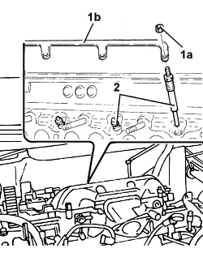

5520C COLD STARTING SYSTEM (DIESEL ENGINES)
- Path
- Procedures > 55 ELECTRICAL EQUIPMENT > 5520 ENGINE STARTING > 5520C COLD STARTING SYSTEM (DIESEL ENGINES)
- Kind
- repair procedure (removal / refitting; the operation number is the code)
- Applies to
- all engines; all production periods
- Interactive page
- https://sloeber94.github.io/elrnDB-fUlss/en/#/179007557
Subtopics (1)
Applies to: engines: 2.0 16V JTD, 2.2 16V JTD; all production periods
 Removing
Removing
 Refitting
RefittingOp. 5530B56 BATTERY DRIP TRAY COVER - R.R.
- Disconnect the negative battery terminal.
Op. 5010B18 CLIMATE CONTROL UNIT AIR INTAKE - R.R.
Op. 5050B34 WINDSCREEN WIPER ARM/S COMPLETE WITH BLADE - R+R
[both]
Op. 7055A18 L/H OR R/H SIDE RUBBING STRIP (ONE) FOR FRONT DOOR - R+R
Op. 5050B38 WINDSCREEN WIPER ASSEMBLY - R+R OR REPAIR
Op. 1048A10 AIR FILTER ASSEMBLY - R.R.
Op. 1048B22 AIR DELIVERY HOSE FROM HEAT EXCHANGER TO INTAKE MANIFOLD - R + R
Op. 1048A44 HOSE FROM FILTER TO TURBOCHARGER AIR INLET PIPE - REPLACE
Op. 1080C54 EXHAUST GAS SUPPLY PIPE FROM E.G.R. VALVE TO INTAKE MANIFOLD - R.R.
1. Undo nuts (1a) and disconnect the glow plug connection strip (1b).
2. Unscrew the glow plugs and remove.

Applies to: engines: 2.0 16V JTD, 2.2 16V JTD; all production periods
Refitting
Removing- Position and screw in the glow plugs, tightening to the specified torque.
da Nm | Fastening | Component | dia |
|---|---|---|---|
1.0 | - | GLOW PLUGS |
- Position the connection strip on the glow plugs and tighten the nuts to the specified torque.
da Nm | Fastening | Component | dia |
|---|---|---|---|
1.0 | Nut | GLOW PLUGS | - |
Op. 1080C54 EXHAUST GAS SUPPLY PIPE FROM E.G.R. VALVE TO INTAKE MANIFOLD - R.R.
Op. 1048A44 HOSE FROM FILTER TO TURBOCHARGER AIR INLET PIPE - REPLACE
Op. 1048B22 AIR DELIVERY HOSE FROM HEAT EXCHANGER TO INTAKE MANIFOLD - R + R
Op. 1048A10 AIR FILTER ASSEMBLY - R.R.
Op. 5050B38 WINDSCREEN WIPER ASSEMBLY - R+R OR REPAIR
Op. 7055A18 L/H OR R/H SIDE RUBBING STRIP (ONE) FOR FRONT DOOR - R+R
Op. 5050B34 WINDSCREEN WIPER ARM/S COMPLETE WITH BLADE - R+R
[both]
Op. 5010B18 CLIMATE CONTROL UNIT AIR INTAKE - R.R.
- Connect the negative battery terminal and tighten the retainer.
Topics linked from this page (9)
- 1048A10 AIR FILTER ASSEMBLY - R.R.
- 1048A44 HOSE FROM FILTER TO TURBOCHARGER AIR INLET PIPE - REPLACE
- 1048B22 AIR DELIVERY SLEEVE FROM HEAT EXCHANGER TO INTAKE MANIFOLD - R + R
- 1080C54 PIPE CARRYING EXHAUST GAS FROM E.G.R. VALVE TO INLET MANIFOLD - R + R
- 5010B18 CLIMATE CONTROL UNIT AIR INTAKE - R.R.
- 5050B34 WINDSCREEN WIPER ARM/S COMPLETE WITH BLADE - R+R
- 5050B38 WINDSCREEN WIPER ASSEMBLY - R+R OR REPAIR
- 5530B56 BATTERY DRIP TRAY COVER - R.R.
- 7055A18 L/H OR R/H SIDE RUBBING STRIP DECORATIVE SEAL - R+R
Topics that link to this page (6)
- E5050 DIESEL ENGINE ELECTRONIC MANAGEMENT WIRING DIAGRAM
- E5050 DIESEL ENGINE ELECTRONIC MANAGEMENT COMPONENT LOCATION
- E5050 DIESEL ENGINE ELECTRONIC MANAGEMENT WIRING DIAGRAM
- E5050 DIESEL ENGINE ELECTRONIC MANAGEMENT COMPONENT LOCATION
- E5050 DIESEL ENGINE ELECTRONIC MANAGEMENT WIRING DIAGRAM
- E5050 DIESEL ENGINE ELECTRONIC MANAGEMENT COMPONENT LOCATION